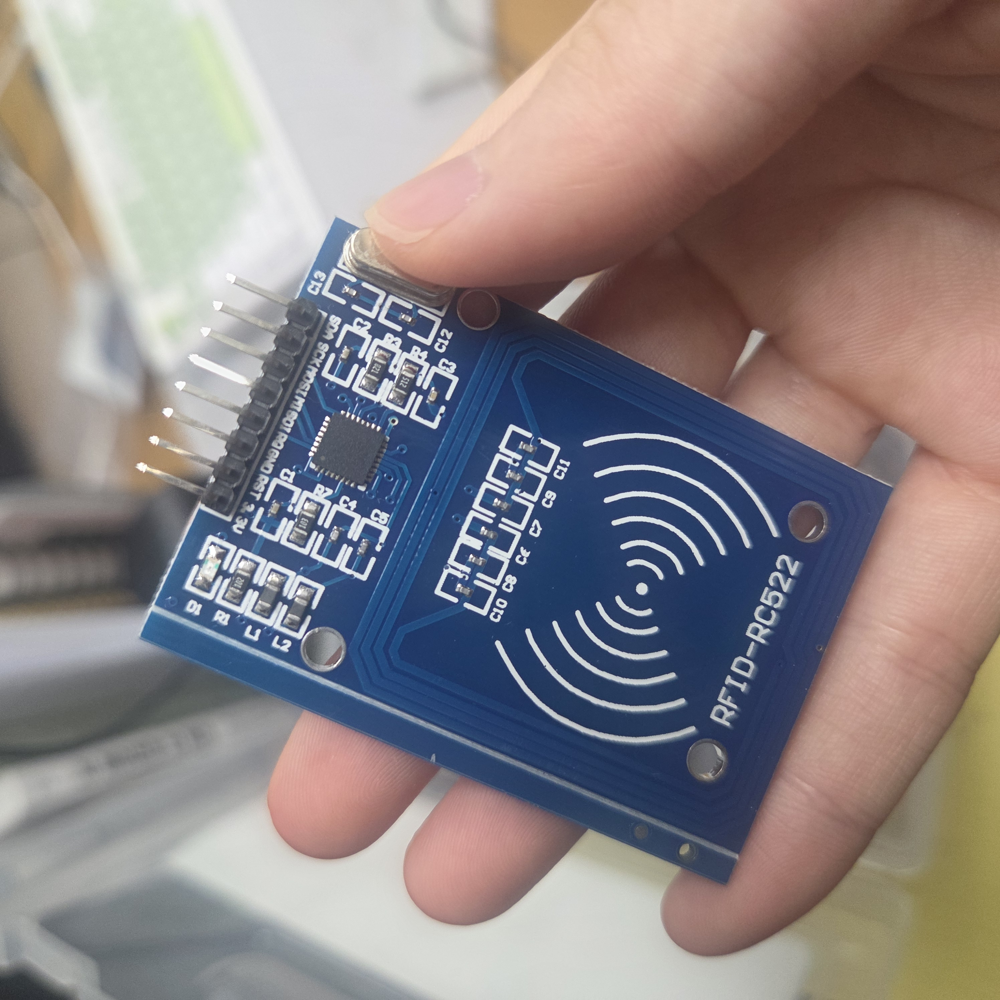
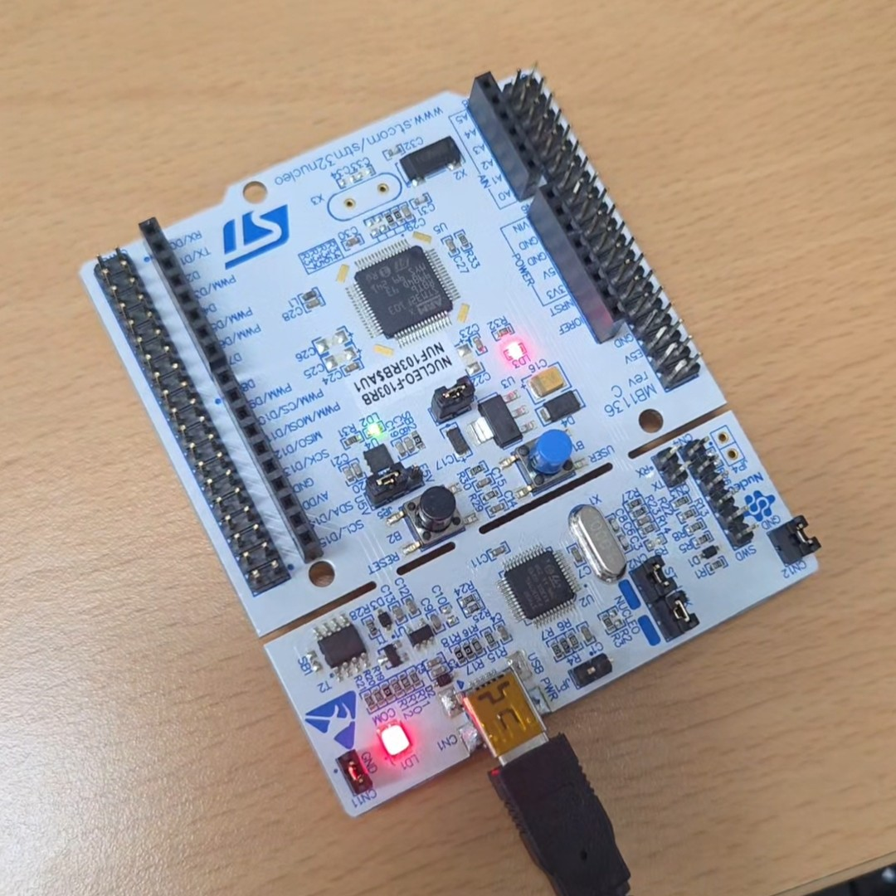
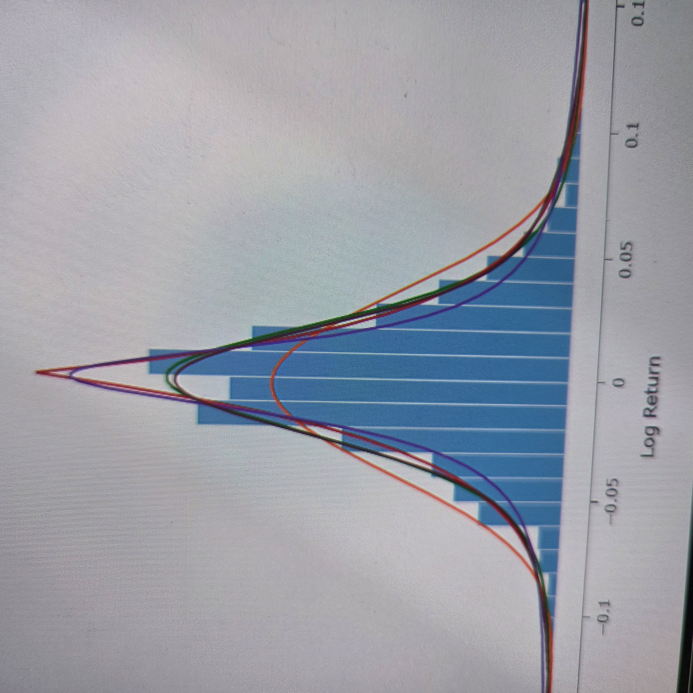
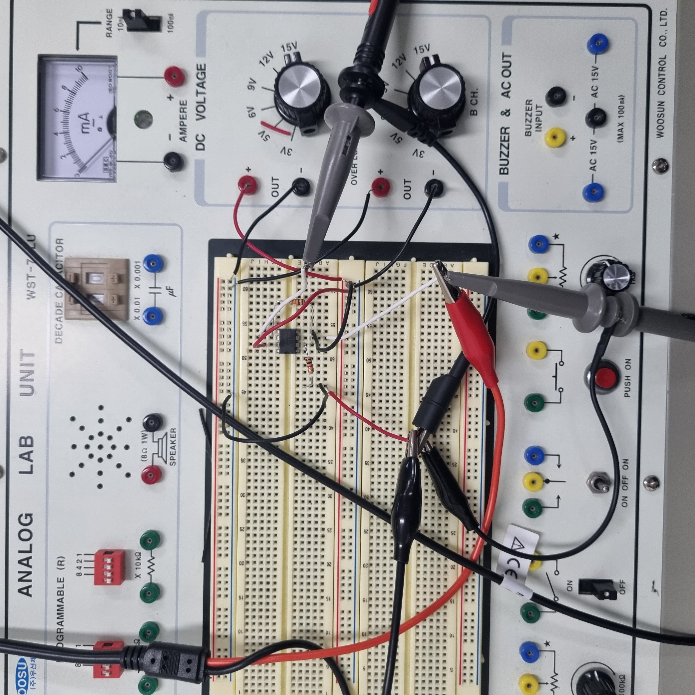
Portfolio
IT의 다양한 분야를 배우고 있는
대학생입니다.
프로젝트 연구를 좋아합니다.
Aspiring Backend Developer
Currently learning various fields of IT and passionate
about project research and technology exploration.
Introduce
안녕하세요. 저는 정보통신이라는 방대한 커리큘럼을 밟으며, 역량을 키우기 위해 노력하고 있습니다. 다양한 분야에서 프로젝트를 진행하고 있습니다.
복잡한 문제를 깊게 파고드는 편이고, 단기간에 성장하는 환경을 추구합니다. 새로운 기술을 빠르게 익히고 실제로 적용해보려 합니다.
Hello. I am pursuing a comprehensive curriculum in Information and Communication, continuously striving to enhance my professional competencies. I have been engaged in a range of projects across diverse fields, gaining experience and broadening my expertise.
I tend to dive deep into complex problems and seek environments where I can grow rapidly in a short period. I enjoy quickly learning new technologies and applying them in practice.
ls -la ./projects
높은 전압 이득을 얻을 수 있지만 대역폭과 안정성 관리가 중요한 증폭기 An amplifier capable of achieving high voltage gain, but where bandwidth and stability management are critical.
-한 신호를 크게 증폭하기 위해 두 개의 공통 이미터(CE)
단을 직렬로 연결한 구조
-C1~C3은 커플링 캐패시터로, AC만 통과시키고 DC는 차단한다.
-1단의 입력된 베이스가 컬렉터에서 증폭된다.
-Re는 DC안정화 및 AC이득증가 역할이다.
-C4, C5는 바이패스 캐패시터로,
AC 네거티브 피드백 제거를 통해 전압 이득을 극대화한다.
-A structure where two common emitter (CE) stages are connected in series to greatly amplify a signal.
-C1–C3 are coupling capacitors that pass AC signals while blocking DC.
-The input signal at the base of the first stage is amplified at the collector.
-Re provides DC stabilization and increases AC gain.
-C4 and C5 are bypass capacitors that remove AC negative feedback to maximize voltage gain.
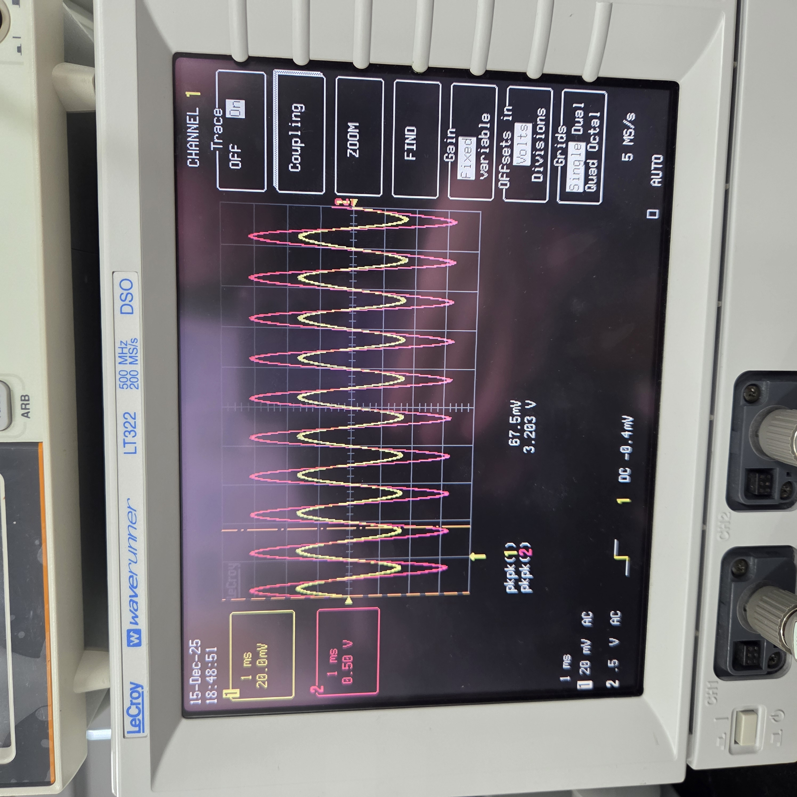
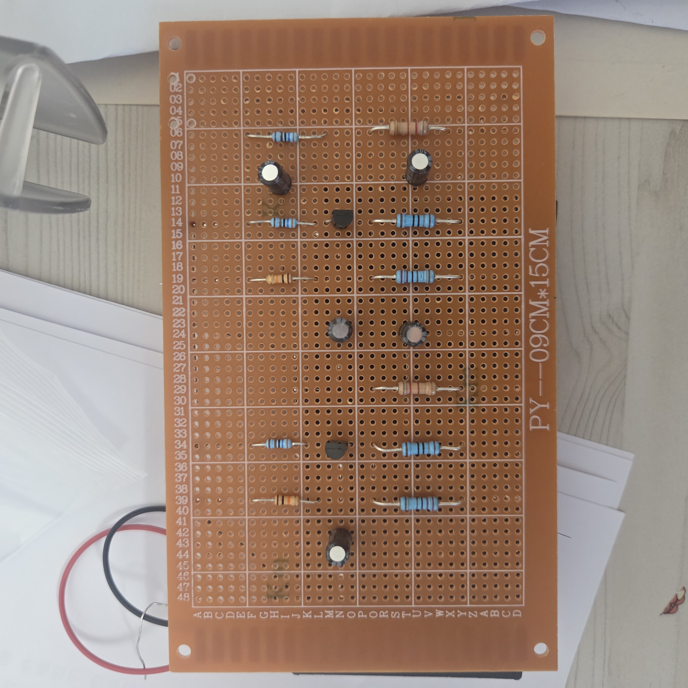
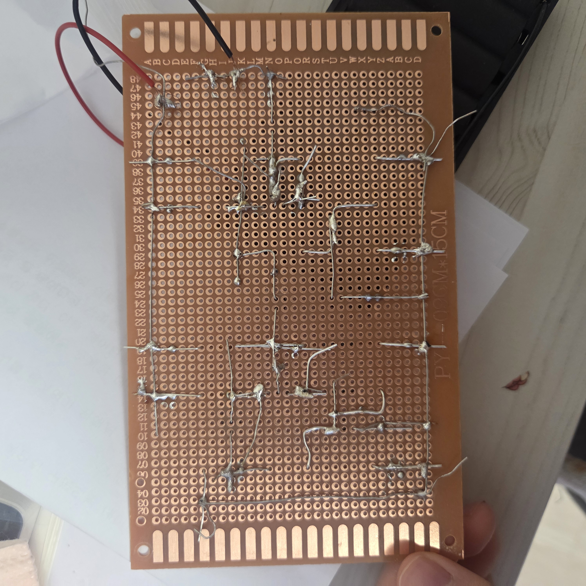
종가 예측과 진입 포지션을 확립해주는 모델 A model that predicts the closing price and establishes entry positions
-예측에 입력된 데이터: 600일
-대상: $XRP, 24.10~26.05
-포지션 구축은 스윙트레이딩일때 가장 유리하다.
-다중 신호를 통해 횡보와 추세를 구분할 수 있다.
-현물 기준 시뮬레이션 결과 3달 수익률 25.88%
-금이나 달러등 유동자산에 사용가능
Entered data for prediction: 600days
Target: $XRP, 24.10~26.05
Building positions is beneficial in swing trading.
It is possible to catch sideways movements or trends through multiple signals.
Simulation result in 3month return: 25.88%
//spot trading only
It can use other liquidity asset ex)gold, Fx
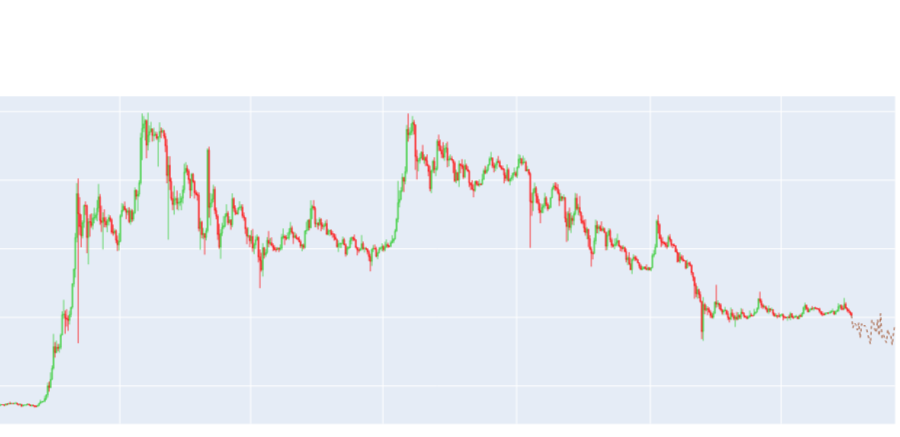
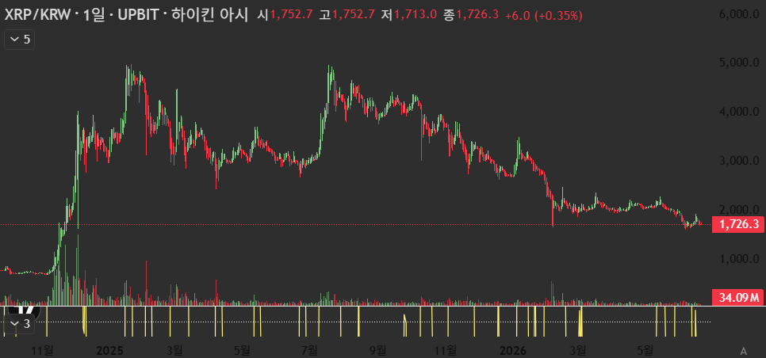
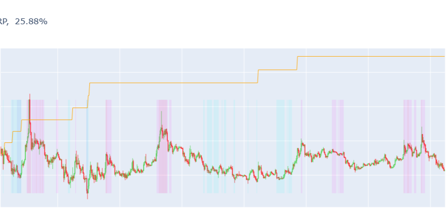
만능 기판에 앰프를 설계하여 잡음 최소화를 목표로 한다. Design an amplifier on a universal board with the goal of minimizing noise.
스테레오 오디오 앰프는 작은 오디오 신호를 증폭하여
두 개의 스피커에 출력하는 장치이다.
입력된 오디오 신호는 주파수 특정을 보정하는 저항과
DC를 차단하는 캐패시터를 거쳐,
OP-AMP IC칩을 통해 이득이 확대된다.
가변저항으로 볼륨을 조정할 수 있으며,
가운데 단자의 위치에 따라 입력 신호의 세기가 달라진다.
A stereo audio amplifier is a device that amplifies a small audio signal
and outputs it to two speakers. The input audio signal passes through
resistors that adjust frequency characteristics and capacitors that
block DC, then its gain is increased by an op-amp IC chip.
The volume can be adjusted with a variable resistor,
and the strength of the input signal varies depending
on the position of the center terminal.
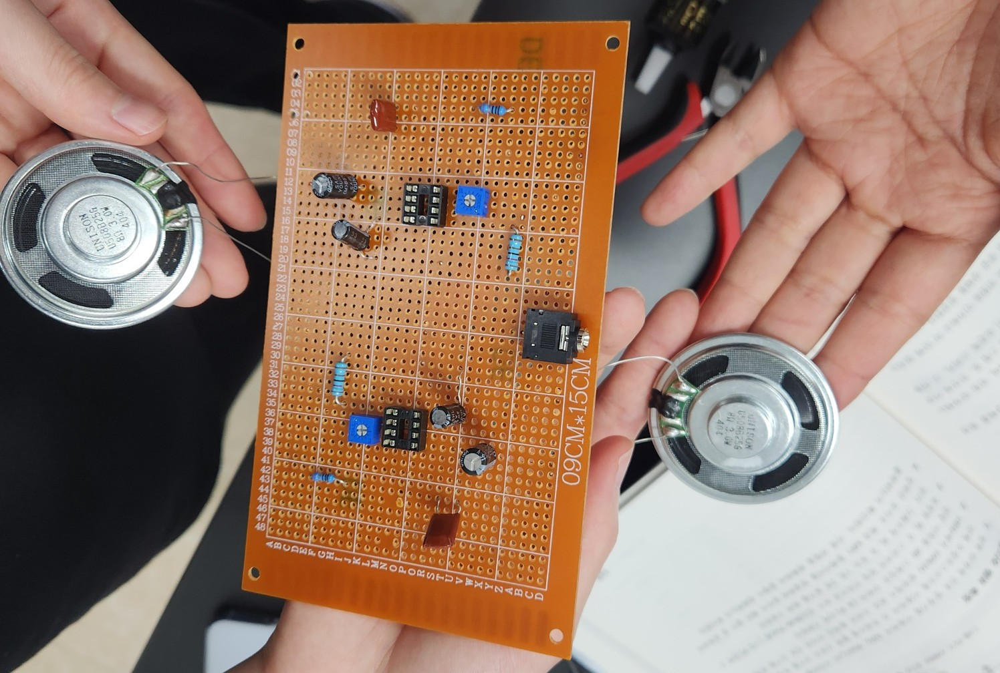
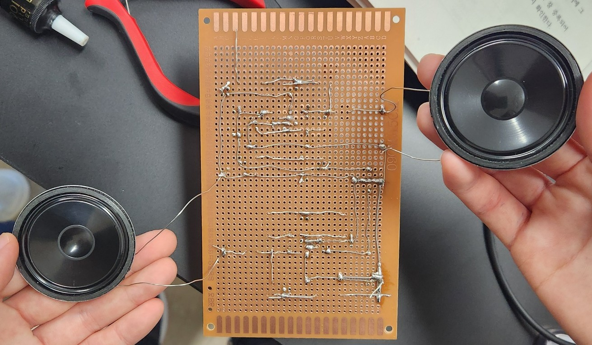
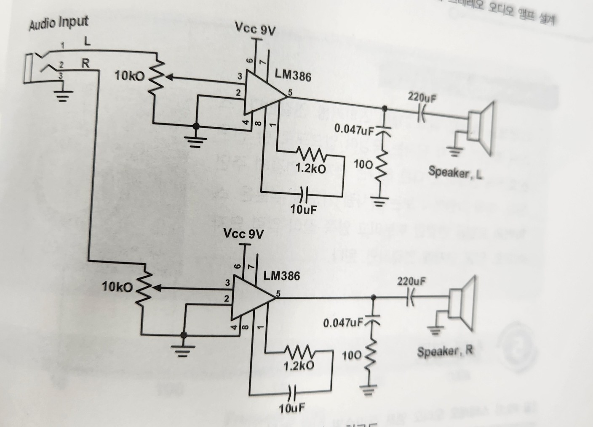
저전력, 저비용으로 실시간 대응 고지능 CCTV를 구현하기 Implementing a real-time responsive, high-intelligence CCTV system with low power consumption and low cost.
PIR센서가 피사체를 1초이상 감지하면, 카메라 모듈이 켜져
인식대상이 어떤 사람인지를 판별한다.
외부인이라면 녹화하여 장치에 저장하고, 사용자에게 알람을 보낸다.
movenet lightning 모델을 사용하였으며,
카메라가 on/off 될때마다 메신저로 즉각적인 상태를 알 수 있다.
수동 부저를 달아 외부 침입자에게 경고음을 울릴 수 있다.
If the PIR sensor detects a subject for more than one second,
the camera module is activated and determines who the detected
person is. If the person is an outsider, the system records
the footage, stores it on the device, and sends an alert to the user.
The MoveNet Lightning model is used, and the user can immediately
check the camera’s on/off status via a messenger.
A manual buzzer is also installed to emit a warning sound to external intruders.
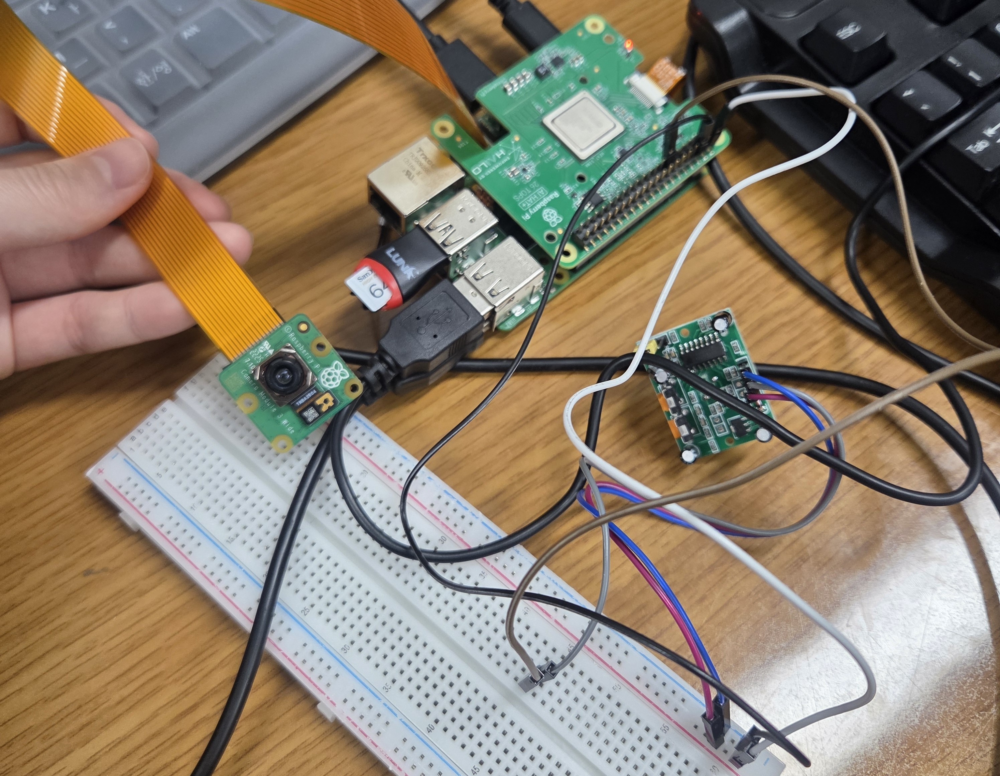
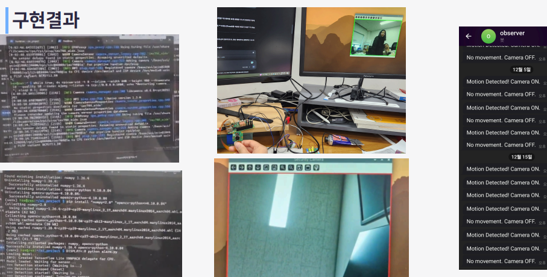
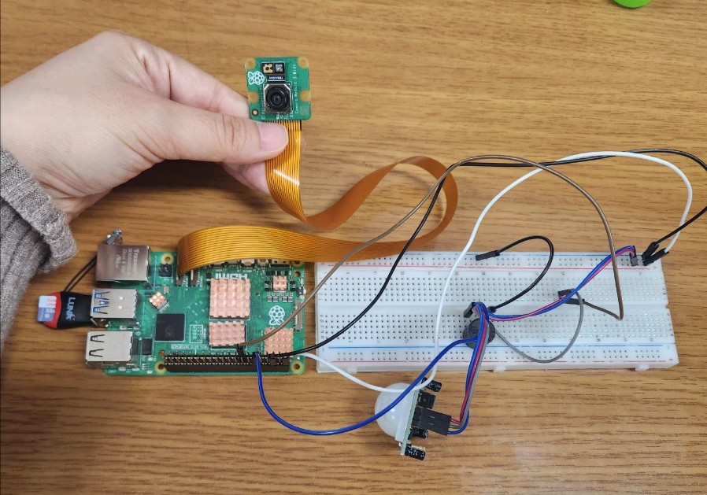
Save the poor undergraduate
취업계 쓰고싶습니다. I want to get an intership.
Linkedin github: illicitillkwn ↗